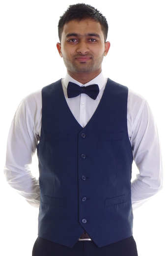
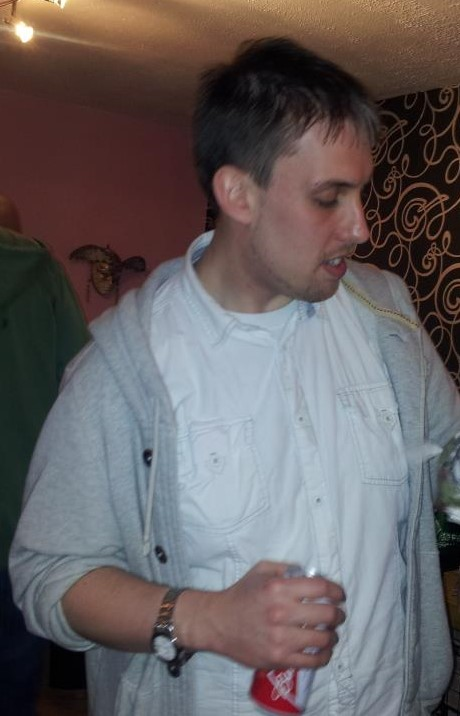

ABOUT ME

I am Rayhan and I am doing Business Computing (Web Design) course under the university of Northampton. I am very optimistic about my life. I dream all the best things possible for me. For example, when I was in my country Bangladesh, it was a very good nightmare to study in Northampton University with a very demandable course. But it became true by my positive thinking and making some routine work each day. From the beginning of my childhood I was always different in every place in the case of my life style. For example, i always prefer educative person in my side and love to talk with them as much as possible time, I tried to spend time with expert senior that has really helped me to think about my future life. Moreover, my personality is like manage everything to live my life that include family, relatives, friends, neighbour and village people. I have a big dream about the young generation in my village first then all over the world that make them as much as productive. However, I love to travel different place in the world and want to impose my personal role in the legislation of the world role. It is a very high thinking again but as I said I am very positive dreamer who love to dream a lot of impossible things and love to work for it. Most importantly, I want to give all the credit of being myself here to my constructive family. Their sacrifice and support are tremendously helping me to do this things as a responsive person.
MY TEAM

My name is James Sharman, I am a mature student that is attending Northampton University and studying a degree in computers. Since the age of 18 my desire for knowledge in computers has expanded to the present day where I now feel I would like a career in computing. I currently reside in Oxfordshire in a small town called Bicester, where I commute to attend University. In three years when I have my degree I would like to specialise in the field of network security, and possibly look to have a job around or near the Milton Keynes area, there are many jobs that fit the description of my desired career. My main hobbies are attending the gym, where I like to stay as fit as possible. I like to visit historical locations such as castles, manor houses and gardens. I also like in my spare time to socialise with friends and family, where I either go for drinks or meals at different restaurants in the local area. For extra work I like to fix computers either for family or friends when their computers break or need a swift upgrade, also helping my brother in law at his place of work in a funeral home, where I feel I earn plenty of life experiences that help me become the person I am today.